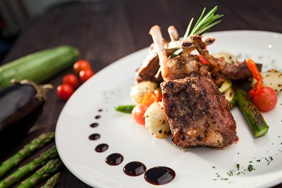

RACK DE CORDEROIncluye: La salsa de guajillo de piña encabeza esta combinación que lleva berenjenas a la parrilla, cebolla roja, espárragos y por supuesto, las deliciosas y decadentes costillitas ahumadas de cordero. Precio: $665 pesos |
SOPA DE FLOR DE CALABAZAIncluye: Servido con una ronda de queso de cabra y chile ancho, esta sabrosa sopa de flor de calabaza se sirve con maíz y calabacín. Precio: $200 pesos |

TOSTADA WONTONIncluye: Servido en una galleta wonton con tu elección de atún picante, hamachi o tártara vegetal, este favorito viene con cebolla roja, rodajas de aguacate y una salsa picante especial. Precio: $50 pesos |
CRISPY WRAPIncluye: Bañado en los exóticos sabores del curry y coco tailandés, este bollito crujiente, relleno de pollo y camarones, se sirve en un consomé de bonito, acompañado de col lombarda. Precio: $200 pesos |